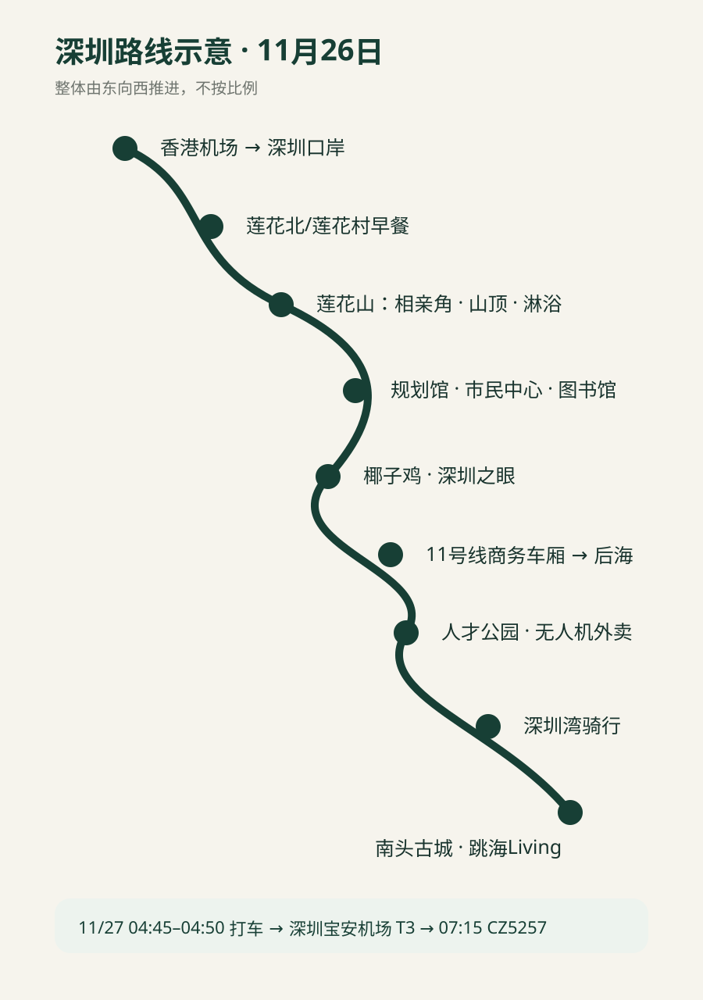

2026.11.26–11.27 · 周四/周五 · 香港机场入境 → 福田 → 深圳湾 → 南头
香港机场 → 居民区猪杂汤粉 → 莲花山 → 福田CBD → 椰子鸡 → 深圳之眼 → 11号线商务车厢 → 后海科技体验 → 人才公园 → 深圳湾骑行 → 南头古城 → 跳海Living。
06:25 抵达 HKG。入境后按“Mainland/Macao Transport / 内地及澳门交通”前往 T2 L3 内地交通服务区域，询问当下最早出发的深圳方向跨境车。不要为了指定皇岗或深圳湾口岸多等车；若发车时间接近，皇岗更利于前往福田。
具体班次、票价和口岸运行以 11/26 当天机场柜台为准。
岗厦北“深圳之眼”游览后，乘 11 号线商务车厢至后海。按车站商务车厢标识购票/核准，不用为了商务座额外绕路。
11/27 04:45–04:50 直接打车：跳海Living → 深圳宝安国际机场 T3。前一晚完成南航线上值机，只有背包则按现场规则直接安检。

此网页部署到 HTTPS 后，用 Safari 打开 → 分享 → 添加到主屏幕。首次在线打开后，核心页面和路线图会缓存，可离线查看；高德、美团等实时服务仍需网络。